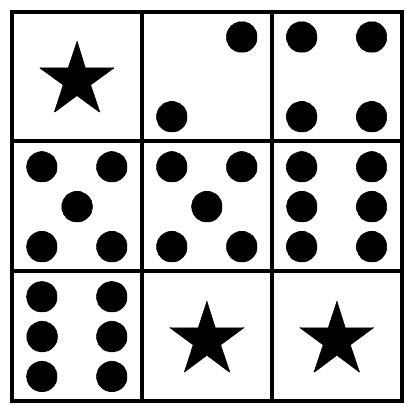
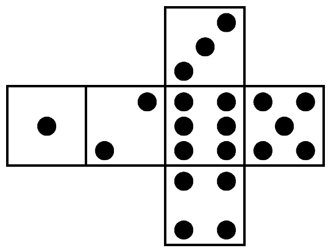
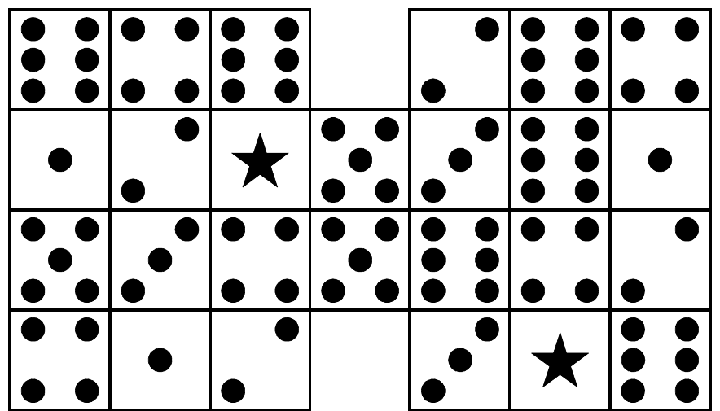

The 23rd Annual ACM International Collegiate Programming Contest World Finals · Problem C
The three-by-three array in Figure 1 is a maze. A standard six-sided die is needed to traverse the maze (the layout of a standard six-sided die is shown in Figure 2). Each maze has an initial position and an initial die configuration. In Figure 1, the starting position is row 1, column 2—the “2” in the top row of the maze—and the initial die configuration has the “5” on top of the die and the “1” facing the player (assume the player is viewing the maze from the bottom edge of the figure).


To move through the maze you must tip the die over on an edge to land on an adjacent square, effecting horizontal or vertical movement from one square to another. However, you can only move onto a square that contains the same number as the number displayed on the top of the die before the move, or onto a “wild” square which contains a star. Movement onto a wild square is always allowed regardless of the number currently displayed on the top of the die. The goal of the maze is to move the die off the starting square and to then find a way back to that same square.
For example, at the beginning of the maze there are two possible moves. Since the 5 is on top of the die, it is possible to move down one square, and since the square to the left of the starting position is wild it is also possible to move left. If the first move chosen is to move down, this brings the 6 to the top of the die and moves are now possible both to the right and down. If the first move chosen is instead to the left, this brings the 3 to the top of the die and no further moves are possible.
If we consider maze locations as ordered pairs of row and column numbers (row, column) with row indexes starting at 1 for the top row and increasing toward the bottom, and column indexes starting at 1 for the left column and increasing to the right, the solution to this simple example maze can be specified as: (1,2), (2,2), (2,3), (3,3), (3,2), (3,1), (2,1), (1,1), (1,2). A bit more challenging example maze is shown in Figure 3.
The goal of this problem is to write a program to solve dice mazes. The input file will contain several mazes for which the program should search for solutions. Each maze will have either a unique solution or no solution at all. That is, each maze in the input may or may not have a solution, but those with a solution are guaranteed to have only one unique solution. For each input maze, either a solution or a message indicating no solution is possible will be sent to the output.

The input file begins with a line containing a string of no more than 20 non-blank characters that names the first maze. The next line contains six integers delimited by single spaces. These integers are, in order, the number of rows in the maze (an integer from 1 to 10, call this value R), the number of columns in the maze (an integer from 1 to 10, call this value C), the starting row, the starting column, the number that should be on top of the die at the starting position, and finally the number that should be facing you on the die at the starting position. The next R lines contain C integers each, again delimited by single spaces. This R × C array of integers defines the maze. A value of zero indicates an empty location in the maze (such as the two empty squares in the center column of the maze in Figure 3), and a value of -1 indicates a wild square. This input sequence is repeated for each maze in the input. An input line containing only the word “END” (without the quotes) as the name of the maze marks the end of the input.
The output should contain the name of each maze followed by its solution or the string “No Solution Possible” (without the quotes). All lines in the output file except for the maze names should be indented exactly two spaces. Maze names should start in the leftmost column. Solutions should be output as a comma-delimited sequence of the consecutive positions traversed in the solution, starting and ending with the same square (the starting square as specified in the input). Positions should be specified as ordered pairs enclosed in parentheses. The solution should list 9 positions per line (with the exception of the last line of the solution for which there may not be a full 9 positions to list), and no spaces should be present within or between positions.
DICEMAZE1 3 3 1 2 5 1 -1 2 4 5 5 6 6 -1 -1 DICEMAZE2 4 7 2 6 3 6 6 4 6 0 2 6 4 1 2 -1 5 3 6 1 5 3 4 5 6 4 2 4 1 2 0 3 -1 6 DICEMAZE3 3 3 1 1 2 4 2 2 3 4 5 6 -1 -1 -1 END
DICEMAZE1 (1,2),(2,2),(2,3),(3,3),(3,2),(3,1),(2,1),(1,1),(1,2) DICEMAZE2 (2,6),(2,5),(2,4),(2,3),(2,2),(3,2),(4,2),(4,1),(3,1), (2,1),(2,2),(2,3),(2,4),(2,5),(1,5),(1,6),(1,7),(2,7), (3,7),(4,7),(4,6),(3,6),(2,6) DICEMAZE3 No Solution Possible